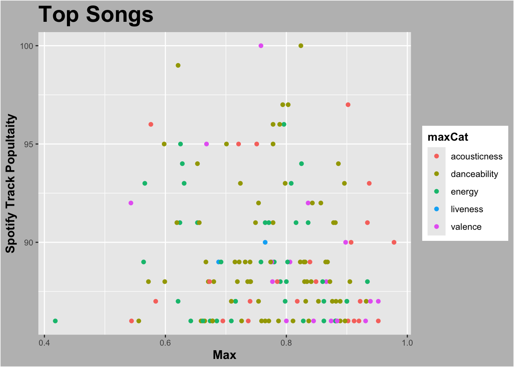
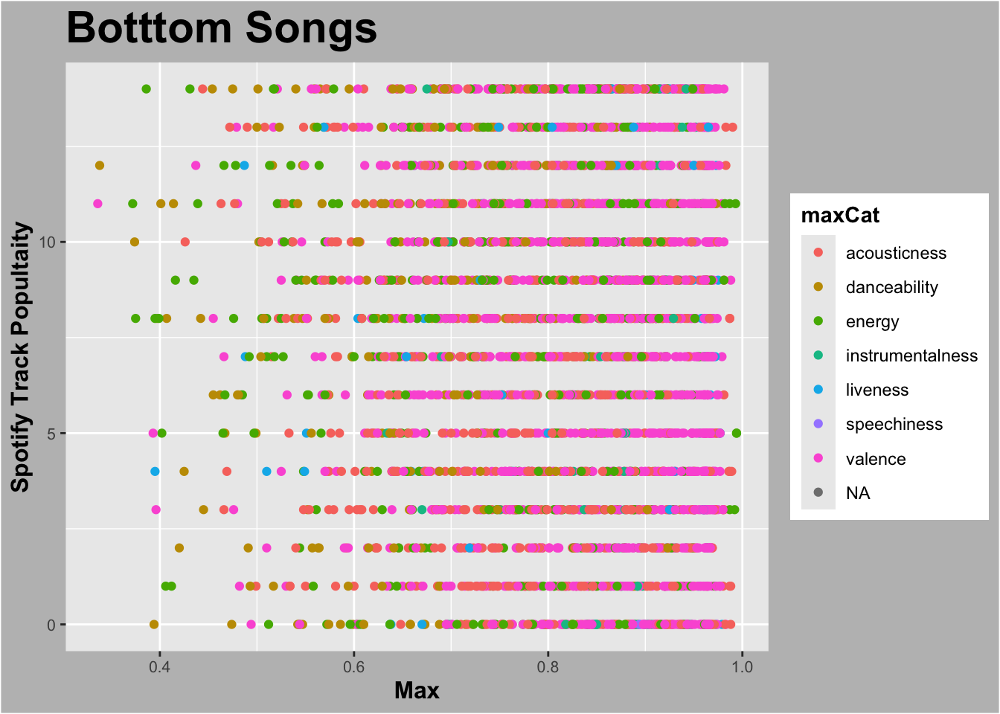
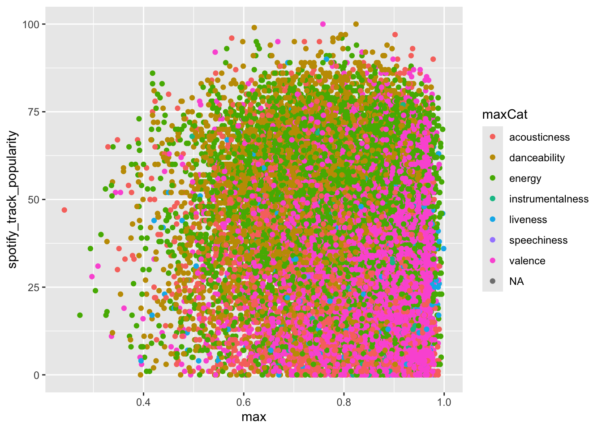
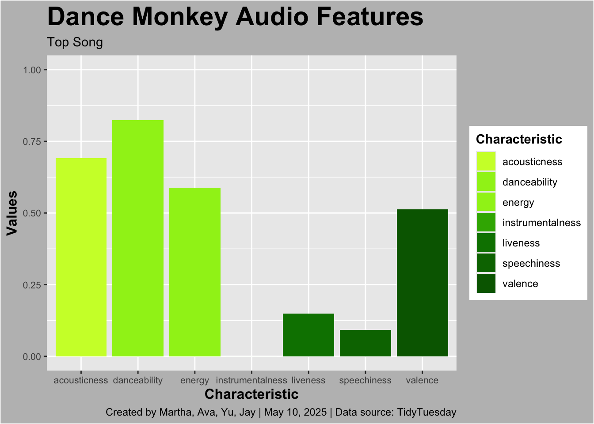
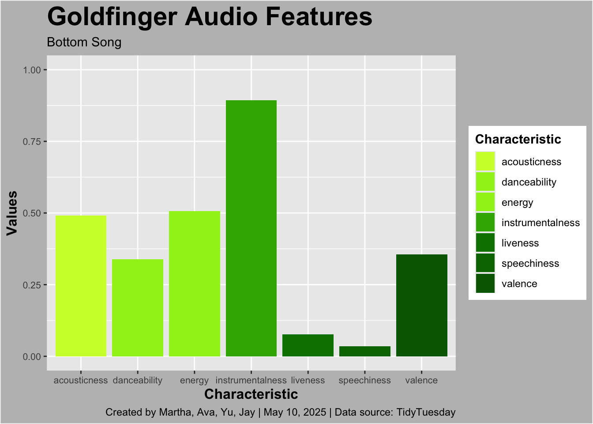

Acoustic Characteristics of Top Billboard Songs
Motivation:
When searching for a data set we were intrigued by the variables of audio features and how they contribute to the overall popularity of a song. Music is very relevant in today’s culture and our lives, and many people like a wide variety of music. We found it interesting to look at what “hidden” or subconscious elements of the song may play a role into the popular enjoyment of the track. Some of our favorite audio features that we are analyzing for popularity are danceability, valence, and energy. We are curious if these features will play a significant role within the popularity of the track. This project is important as it not only paints a picture for what current audio features tend to make a track popular, but also could help predict popularity of future songs based on their elements.
Research Question:
With this project, we are working to answer the question of whether or not the Spotify popularity of a song is impacted by its audio characteristics, and whether there are certain characteristics more associated with high or low popularity. The goal of this project is to see what makes a song popular in terms of its audio characteristics, and whether or not there are certain characteristics more associated with high popularity vs. low popularity. Depending on our results, we want to communicate whether audio characteristics do have an impact on a songs popularity and that there are many factors that are not often thought about that go into determining the popularity of a song.
Background:
To understand the data we need to know what the variables represent and where they are from. The audio features and popularity scores come from the Spotify index. The Spotify Popularity Index measures what is “hot and not” in the music field. It is designed to influence what music listeners will hear. The Popularity Score is a metric that ranks overall songs and albums based on their level of listener engagement and overall appeal on platform. The score ranges from 0-100 and takes into account recent play counts, frequency, and distributions of listens. This popularity then plays a role in when and where these songs are added to Spotify playlists which then enhances the streams. The audio features are also a measurement measured through and by Spotify. A description of each element and what they measure is listed below:
Energy- Energy is a measure from 0.0 to 1.0 and represents a perceptual measure of intensity and activity. Typically, energetic tracks feel fast, loud, and noisy. For example, death metal has high energy, while a Bach prelude scores low on the scale. Perceptual features contributing to this attribute include dynamic range, perceived loudness, timbre, onset rate, and general entropy.
Valence- A measure from 0.0 to 1.0 describing the musical positiveness conveyed by a track. Tracks with high valence sound more positive (e.g. happy, cheerful, euphoric), while tracks with low valence sound more negative (e.g. sad, depressed, angry).
Liveness- Detects the presence of an audience in the recording. Higher liveness values represent an increased probability that the track was performed live. A value above 0.8 provides strong likelihood that the track is live.
Instrumentalness- Predicts whether a track contains no vocals. “Ooh” and “aah” sounds are treated as instrumental in this context. Rap or spoken word tracks are clearly “vocal”. The closer the instrumentalness value is to 1.0, the greater likelihood the track contains no vocal content. Values above 0.5 are intended to represent instrumental tracks, but confidence is higher as the value approaches 1.0.
Acousticness- A confidence measure from 0.0 to 1.0 of whether the track is acoustic. 1.0 represents high confidence the track is acoustic.
Speechiness- Speechiness detects the presence of spoken words in a track. The more exclusively speech-like the recording (e.g. talk show, audio book, poetry), the closer to 1.0 the attribute value. Values above 0.66 describe tracks that are probably made entirely of spoken words. Values between 0.33 and 0.66 describe tracks that may contain both music and speech, either in sections or layered, including such cases as rap music. Values below 0.33 most likely represent music and other non-speech-like tracks.
Danceability- Danceability describes how suitable a track is for dancing based on a combination of musical elements including tempo, rhythm stability, beat strength, and overall regularity. A value of 0.0 is least danceable and 1.0 is most danceable.
Background data on what the audio features mean,1 and how Spotify popularity is quantified 2 was also necessary.
Data:
- Data collection
The dataset includes Spotify audio features for over 29,000 songs, including song ID, performer, genre, and a range of acoustic features such as dancebility, energy, valence, speechiness, instrumentalness, and more. It also includes Spotify popularity score for each song.The data was collected around September, 2021, as part of the TidyTuesday project released on 09/14/2021. The purpose of collection was to analyze patterns in acoustic features and investigate how these characteristics relate to song popularity. The data used in this project was originally sourced from Spotify, compiled by Sean Miller, and made available through Data.World.
- Data acquisition
The data was downloaded directly from the TidyTuesday GitHub repository, and imported into our local RStudio session for analysis. The data orginates from Spotify and hosted by TidyTuesday.
- Data understanding
The data has 29503 entries and 24 total columns. Acoustic features include: danceability, energy, valence, speechiness, acousticness, instrumentalness, liveness, tempo, loudness Other features like like key, mode, duration_ms, time_signature, spotify_track_popularity (range: 0–100) are also included. Due to the high number of data points in our data set, and our focus on audio trends in relation to popularity, we decided to limit the number of data points we looked at to understand relative trends in highest vs. lowest popularity songs. This resulted in our focus being on songs with a popularity score of 0 (280 songs) and popularity score of above 85 (225).
Data Insights:




One thing that stood out was how some audio features differed between the most and least popular songs. Songs with high popularity scores tend to have higher danceability and lower instrumentalness, which makes sense because people enjoy songs that are fun to move to and have vocals. We also noticed that acousticness is higher in popular songs. We expected features like energy to be one of the biggest factors because high energy songs would be more popular intuitively. But some top songs actually have moderate energy levels and it’s not the key factor driving popularity. These takeaways are useful because they show that certain audio features are tied to what people like or listen to more on Spotify. It’s helpful for artist and producer to know what characteristics can make the song popular.
Our report : https://www.youtube.com/watch?v=0sk6iWK15po
Conclusions / Big Picture:
Through our analysis we found that a higher dancability score is positively associated with a higher popularity, whereas instramentalness is negatively associated with high popularity. Additionally acousticness tends to have higher scores in the top songs. The other characteristics don’t necessary show a discernible relationship with popularity. The various limitations of the assignment include: it is a comparison only between one 100 score song and one bottom score song ( trends may not be applicable widely), the features measured are Spotify-based and centered on Spotify user habits and available songs which causes the conclusions to not be generalized to the wider music industry, songs are excluded from the data set due to incomplete data scores.